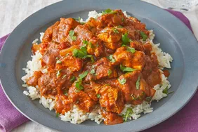
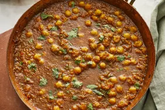

Chicken curry from the Indian subcontinent typically features chicken stewed in a tomato-based sauce seasoned with aromatic spices.

Chicken curry is a dish originating from the Indian subcontinent. It is common in the Indian subcontinent, Southeast Asia.

Chana masala is a chickpea curry originating in the Indian subcontinent. It is a staple dish in North Indian cuisine.